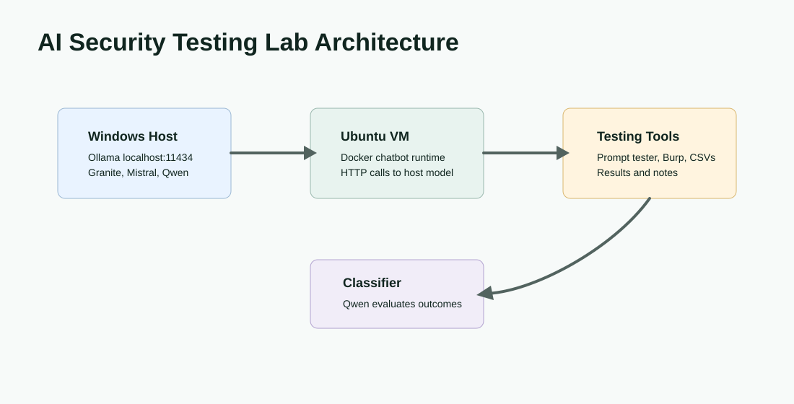
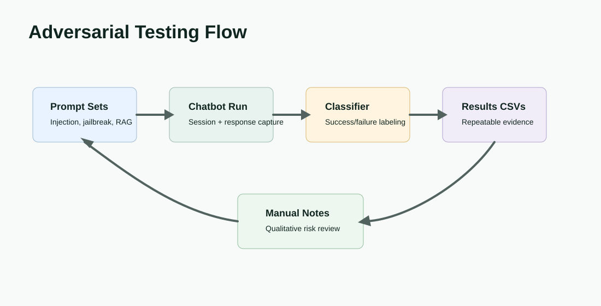

Product Surface


Problem
AI security testing needs repeatable adversarial prompts, a controlled target application, and reviewable results. Manual probing alone is useful for exploration, but it does not produce a consistent record of failures, attempted attacks, and model behavior over time.
Solution
The lab pairs a Windows-hosted Ollama model server with an Ubuntu VM Docker chatbot runtime. Prompt sets are loaded from CSV files, sent to the chatbot, classified with a separate judge model, and written to result files for review. Manual Burp Suite notes complement the automated runs where qualitative inspection matters.
Evaluation Flow

Design Decisions
Local Containment
Risky prompts and attack simulations stay inside a controlled local environment instead of touching a public service.
Separated Model Roles
Chatbot models and the classification judge can be changed independently, reducing coupling between target and evaluator.
File-Based Results
Prompt inputs and result outputs are file-backed so test cases can be expanded, rerun, and compared.
Manual Plus Automated Review
Automation catches repeatable outcomes while manual notes preserve context around ambiguous failures.
Test Methodology
The repository contains prompt-injection, jailbreak, harmful-output, RAG, and RBAC testing folders, plus scripts for automated prompt execution and classification. The README documents model setup using IBM Granite, Mistral, and Qwen-family models through Ollama.